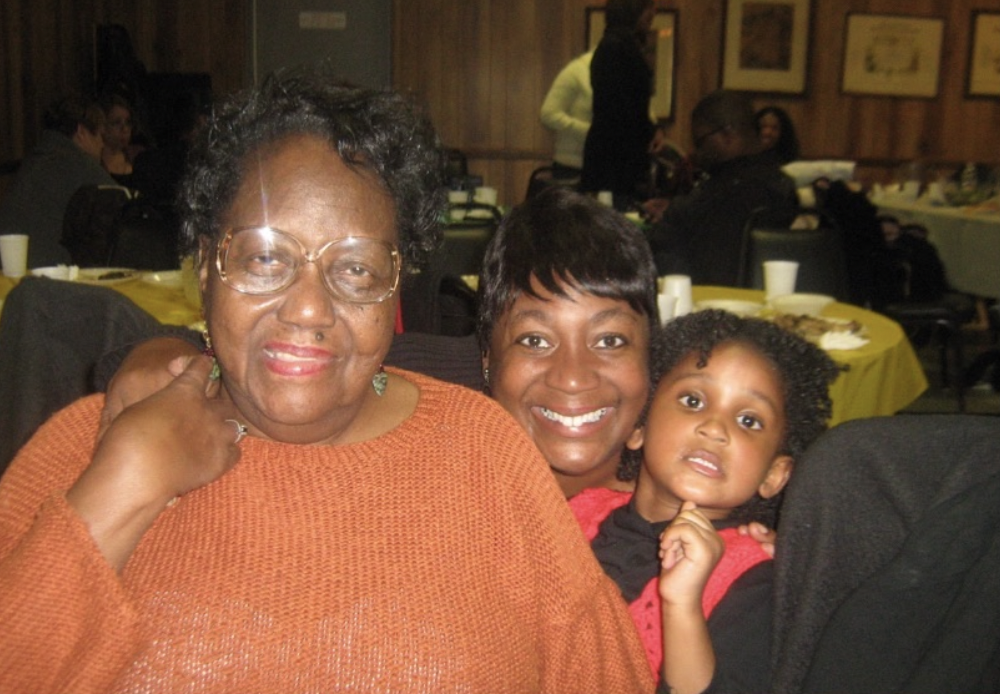
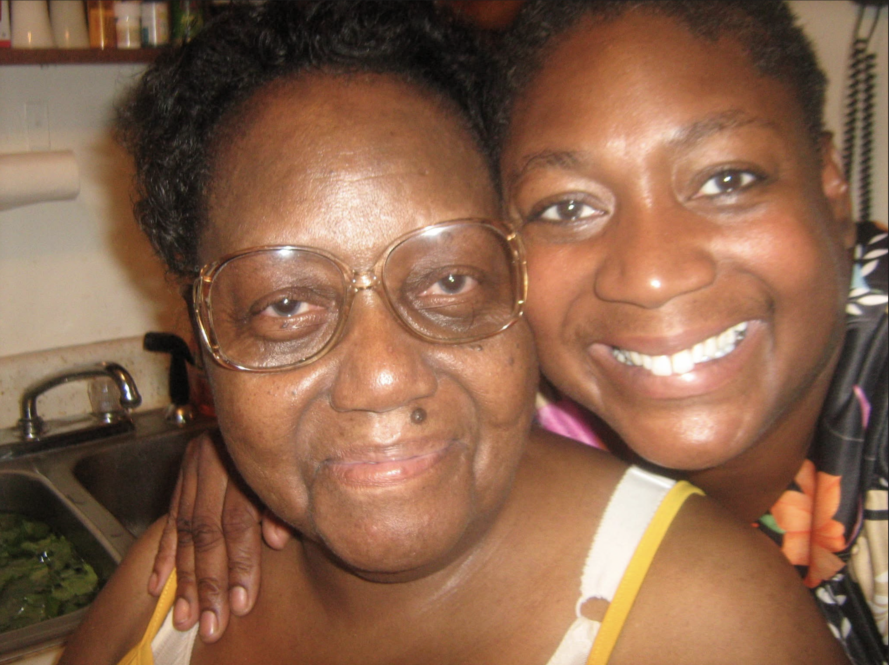
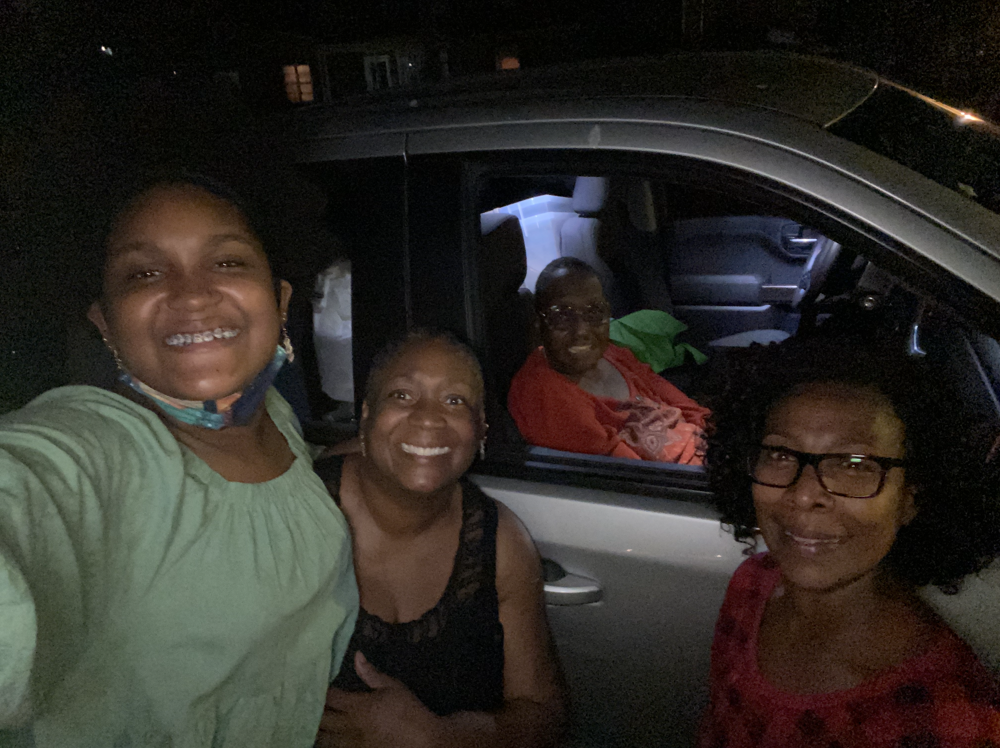
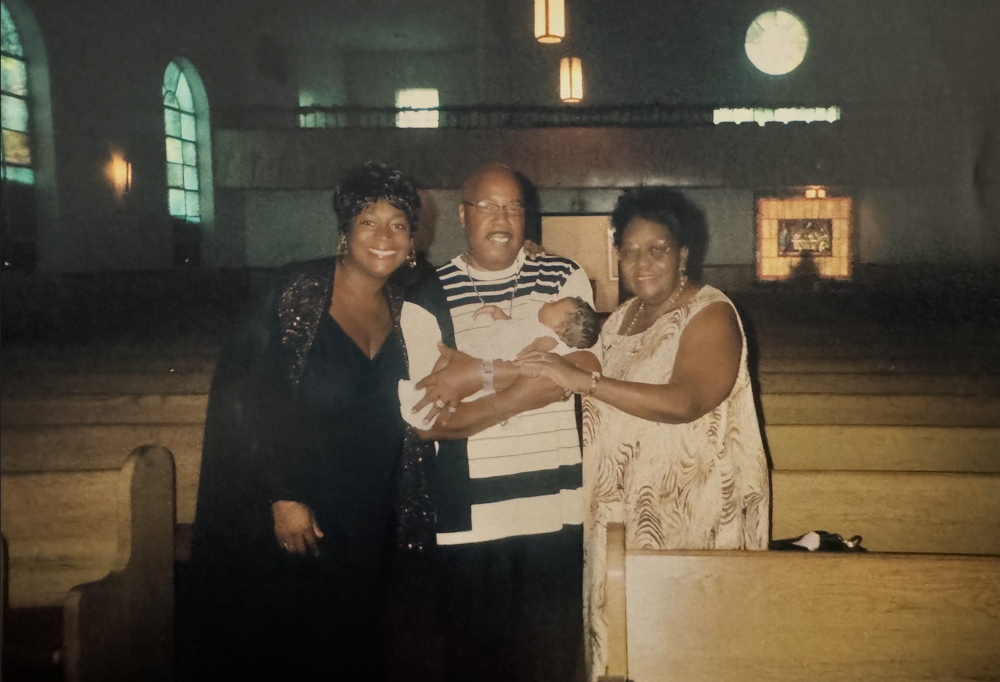
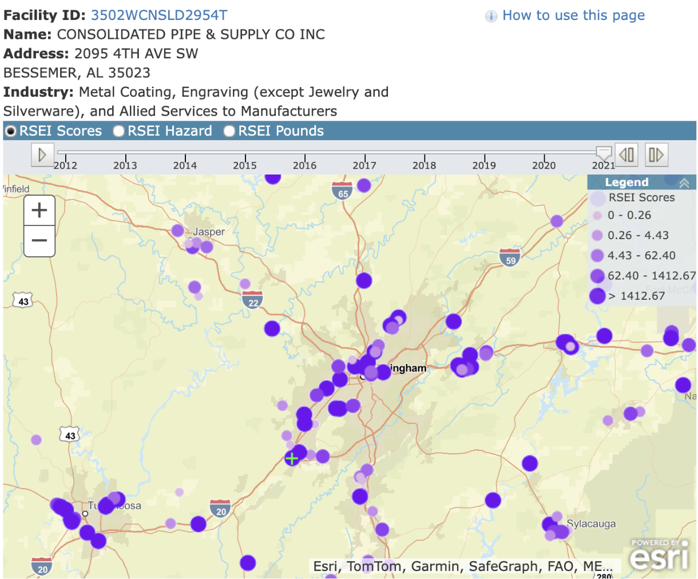
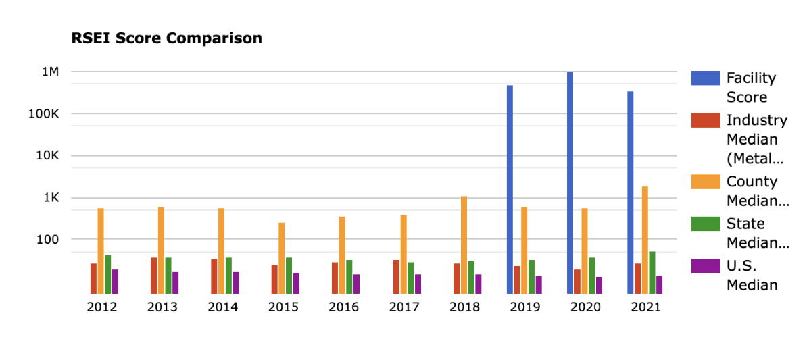

My Grandma's Story:
Family, Birmingham & Environmental Justice
Disclaimer: This project isn't meant to typify my grandmother synonymously with environmental injustice or make her into a figurehead. She was so much more than her cancer diagnosis. Through this project I want to spread light on a broader societal issue, while also highlighting my proximity to harm that I had no clue was even inflicted until I joined this class and understood the complexities of our country. This is a solution oriented website, and a positive dedication to my incredible grandmother, and family. With the utmost respect, I aim to share who she was, what her neighborhood was like, and why protecting communities from pollution, and environmental harm still matters.
Researcher & Presenter
Angel Sheena Cameron Ash
My Grandma Irma & Our Family Story
"She loved blue, her family, her faith, and making people feel cared for."

Grandma Irma, my mom, and me as a toddler!

Grandma and mama in her childhood home, the kitchen on 2637 39th Avenue North

Mini family road trip featuring Aunt Michelle!

Grandma, Poppi, Mom & I (as a newborn). Sleepy baby!
My Grandma Irma was born and raised, in 1940, by two hardworking, educated, African-American and Indigenous people (Isabella Owens Allen and David Allen), who were raised by enslaved (Black) and Indigenous parents. (Papa Jimmy was my great-great-grandfather's nickname. My great-great-grandmother was most likely to be a woman by the name of "Hattie Owens")
My grandmother moved to Birmingham with my mom around 1969 when my mom was about to start elementary school. She bought the house she wanted to build her family in, with her own money, after graduating from Tuskegee Institute with her food science/dietitian degree and certification where she met my grandfather (Poppi). They lived together briefly until their divorce. She worked at UAB Hospital as a dietitian throughout this entire period, retiring in her early 60s—among the first to integrate the hospital's dietary staff in the late 1960s to early 70s where hospital workers in the Deep South were often still segregated.
I'm the only grandchild of James Ralph Cameron and Irma Jean Allen Cameron Patton (Yes, she kept her divorced husband's name, she's a boss :)) She remarried to Eddie Patton (my step-grandfather) and gave birth to my aunts and one uncle over the span of 10 years. (They also later divorced and she kept his name as well.) I have a bunch of amazing cousins as a result of this!
She lived in Birmingham for the rest of her life at 2637 39th Avenue North. Which is still standing today which is now owned by my immediate family. There's still a train track right by the house, a garbage dump, and a freeway built through the land. Plus it's a very hilly area, let alone state, so traversing the environment can get very dangerous at night, especially with limited streetlights. Schools in Birmingham are still somewhat segregated today due to redlining, industrialization and gentrification.
She was diagnosed with lymphoma sometime in the early 2000s. Our family has since discussed concerns about environmental conditions near her home, and she was approached about reparations related to environmental harm in a few years after her diagnosis. Around 2013, after our family did more research, she was approached and compensated while receiving chemotherapy. My grandmother died June 22nd, 2022, less than a month before her 82nd birthday, from metastasized non-Hodgkin's lymphoma. She had also experienced a period of remission lasting more than ten years.
I'm going back to Birmingham this Christmas and I'll be returning continuously wondering if her story could've been any different if the government and community cared about Black people more back then, and if I could've made a difference if I had the ability to share my voice earlier. But most importantly, I'm going back hoping to spread awareness and make it clear that change is coming, and that it is so much more feasible than we think.
A Timeline of Grandma Irma's Life
Irma was born to sharecroppers. Her family's history includes Black and Indigenous ancestors. Based in Georgia.
She studied food science and dietetics at Tuskegee Institute and earned her professional credentials.
She moved to Birmingham with my mom and made a home for her family in North Birmingham.
She worked at UAB Hospital as a dietitian and helped integrate its dietary staff.
She raised her family, worked, served her church, and brought joy to the people around her.
She was diagnosed with lymphoma. She later experienced more than ten years of remission.
Our family learned more about environmental concerns near her home and the compensation she received.
Grandma Irma passed away, less than a month before her 82nd birthday. I miss her every day.
Data Metrics: Industry Toxicity Spikes
EPA Risk-Screening Environmental Indicators (RSEI) in Jefferson County

Purple markers highlight dense clusters of chemical release facilities adjacent to residential neighborhoods in Birmingham.

Facility risk score bars reach nearly 1 Million in 2020/2021 while county, state, and national medians sit below 50.
The Systemic Disparity
These metrics prove environmental harm is synonymous with an alarming increase in toxic exposure. When facility hazard scores surpass 1,000,000 while state and national medians remain under 50, it demonstrates how major industries are sanctioned to shorten and steal lives in Black and low-income neighborhoods.
Interactive Map: North Birmingham & Superfund Site
Pan, zoom, and click controls to view redlining overlays and toxic release sites
Map note: Pins and shaded shapes are approximate visual context. More specific research will be done soon.
What We Can Do Next
I want her story to help people find answers and make their communities safer.
I want people to leave this page knowing something they did not know before—and with a few practical ways to get involved. My grandma’s story is personal to me, but the need for healthier neighborhoods affects so many families.
Give residents a real voice
Tell people about proposed permits, pollution risks, and zoning changes before decisions are made. Use clear notices, accessible meetings, and time for public comments.
Make neighborhood health a priority
Support independent air and soil testing, access to health screenings, and public updates that explain what the results mean.
Support the people doing the work
Learn from local organizers and community science projects. Birmingham groups like GASP help residents understand air quality and advocate for change.
Explore GASP →Hold industries and officials accountable
Ask for transparent pollution reporting, enforceable protections, funded cleanup plans, and regular follow-ups—not just promises.
Helpful links to keep learning
Environmental data can help us identify concerns and ask better questions. A map or screening score alone cannot prove what caused one person's illness. My family's experience is part of why I believe those questions deserve serious attention.
"I'm determined and excited. I want to make a difference for good.
— Angel Ash